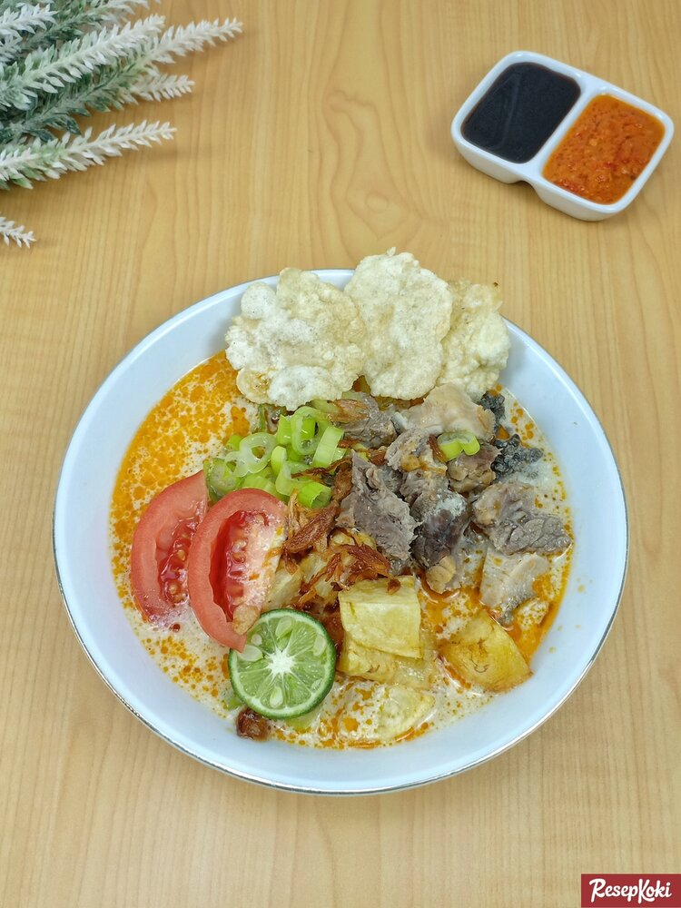

Betawi Soto

Description
Soto Betawi is a typical Jakarta culinary dish that appeared around 1977-1978. The person who popularized and first used the word Soto Betawi was the soto seller at THR Lokasari. Apart from beef, offal such as lungs, intestines and tripe are also used as raw materials for this soto.
Betawi soto sauce has a thick texture and delicious taste because it uses coconut milk. The spices used to make this soto include cumin, candlenuts, coriander and nutmeg. This soto is usually eaten with chips, pickled cucumber and carrots, chili sauce, and fried onions.
Ingredients
- Beef - 500 grams
- Beef tripe - 250 grams
- Water (more if the water decreases) - 2 liters
- Liquid milk - 250 ml
- Salt - 2.5 tsp
- Beef stock powder - 1 tsp
- Granulated sugar - 1 tbsp
- Cooking oil - 3 tbsp
Ground spices:
- Shallots - 10 items
- Garlic - 5 cloves
- Ginger - 1 cm
- Large red chilies - 2 pcs
- Candlenuts - 3 items
- Coriander - 1 tsp
- Cumin - 1/2 tsp
Other seasonning:
- Bay leaf - 2 pieces
- Lemongrass - 2 stalks
- Orange leaves - 5 pieces
- Galangal, crushed - 2 cm
- Ground pepper - 3/4 tsp
- Nutmeg - 1/8 grain
- Cinnamon - 2 cm
- Cloves - 2 pcs
- Lawang flower - 1 item
- Cardamom - 1 item
Complementary
- Potatoes, diced and fried - 2 pieces
- Tomatoes, cut into pieces - 2 pcs
- Spring onions, finely chopped - 3 stems
- Limes - 2 pcs
- Emping melinjo - to taste
- Red bird's eye chili sauce - to taste
- Sweet soy sauce - to taste
How to make:
- Blend the spices, set aside first.
- Boil beef tripe with lime leaves until tender. Remove, cut into pieces.
- Boil the meat in 2 liters until tender. Clean from floating dirt.
- Remove the meat, then cut it into pieces. Also take about 1.5 liters of stock.
- Add the meat and tripe to the boiling stock.
- Heat oil, saute ground spices until fragrant. Add the spices, saute again briefly.
- Add the spices to the meat stew.
- Season with salt, sugar, pepper and stock powder. Continue cooking until the spices are absorbed.
- Add coconut milk and liquid milk. Cook until boiling, then turn off the heat.
- Prepare a bowl, arrange the meat, fried potatoes, tomato slices.
- Drizzle with hot sauce.
- Sprinkle with spring onions and fried shallots.
- Serve with lime juice and chili sauce to taste.